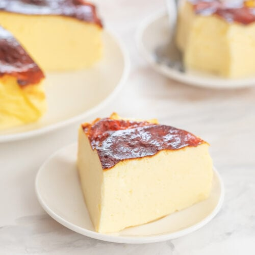

Home
Protein Yoghurt Cake

Description
Here is a great option for a low calorie high protein snack. Using simple ingredients you can get a sweet treat when that craving hits you!
ingredients
- 200g Greek Yoghurt
- 30g Whey Protein of your favourite flavour
- 2 egg whites
- 1 tbsp Corn Flour
Steps
- Use a bowl to mix the Yoghurt with Whey protein
- Add the egg whites and keep mixing
- Add the Corn Flour and mix a final time
- Pour the butter in 2 small ramekins
- Bake for around 20mins at 170c